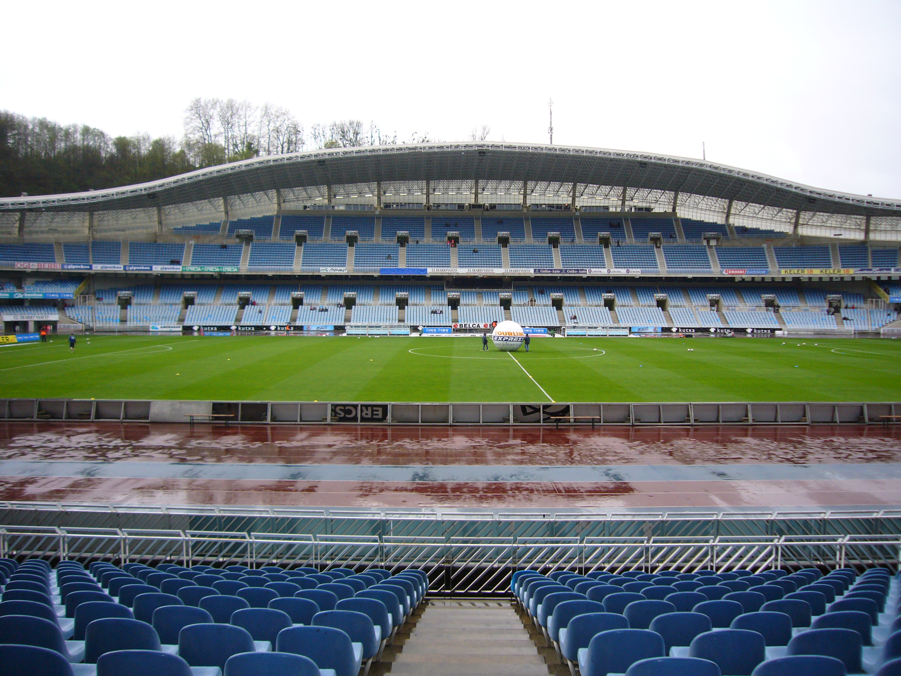
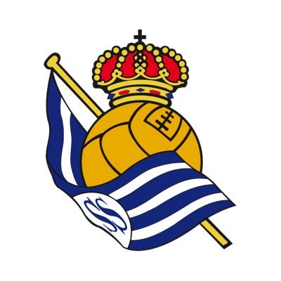

| Hist�ria do Time | Est�dio | Escudo do time | T�tulos | Jogadores, Titulares e Reservas | A Real Sociedad de F�tbol, � um clube de futebol localizado em San Sebasti�n, Guip�zcoa. |
 |  | Liga Espanhola Segunda Divis�o Espanhola Copa del Rey Supercopa de Espa�a |
Ger�nimo Rulli Ander Bardaji Yuri Berchiche Sergio Canales David Zurutuza |